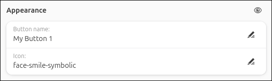
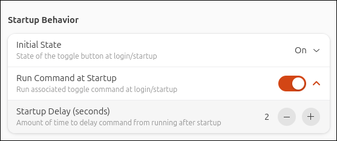
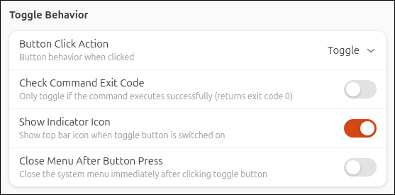
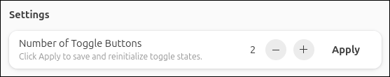

Configuration
To set up and configure, open the extension preferences via the Extension Manager or run:
gnome-extensions prefs custom-command-toggle@storageb.github.com
Appearance
Enter the Button name and Icon to use for each button. Refer to the Icons section below for additional information.
To temporarily remove a toggle button without deleting its configuration, use the hide/reveal button at the top of the Appearance section. Hidden toggles do not appear in the quick settings menu and are fully disabled while hidden.

Icons
Enter the icon name for each toggle button. Do not use the icon path or include a file extension.
Available Icons
For a list of available symbolic icons to use refer to:
Alternatively, browse the icon directory for your system’s theme (typically /usr/share/icons) and enter the name of an icon (without the file extension).
Custom Icons
To use a custom icon, place the icon in: ~/.local/share/icons/. Reboot and then enter the icon name (without the file extension).
Seprate On/Off Icons
To display different icons when the toggle button is on and off, enter both icon names separated by a comma.
Commands
Enter the commands to associate with the quick toggle on/off actions.
If using the Command output option for the Initial State setting or the Keep Toggle State Synced setting, enter the Check Status Command and Search Term to be used. Refer to the Startup Behavior and Command Sync Behavior sections for more details.

Command tips:
- Run multiple commands in parallel by using
&between commands. - Run multiple commands one at a time by using
&&between commands. - Commands run silently (no terminal output), so test them in a terminal before using.
- To run a command in a terminal window, use
gnome-terminal -- command. Note that by default the GNOME terminal will close immediately after the command is complete, but that can be changed in the terminal preferences if needed.
sudo Commands:
- Use
pkexecbefore the command to prompt for a password. For example,pkexec sudo commandprompts for your password and then runs the command. Alternatively, usegnome-terminal -- sudo commandto open a terminal where you can enter your password. - Enable the Check Command Exit Code option under Toggle Behaviour for sudo commands. This will prevent the toggle button from changing status if the wrong password is entered or the command is canceled.
Startup Behavior
Specify the state of each toggle button at startup:
- On: Toggle will be on at startup
- Off: Toggle will be off at startup
- Previous state: Toggle will be in the state it was previously in at startup
- Command output: At startup, the Check Status Command will run after the specified Startup Delay time. If the specified Search Term appears in the command's output, the toggle will be set to on at startup. Otherwise, the toggle will be set to off. To keep the toggle state synced to the command output, refer to the Command Sync Behavior section.

If On, Off, or Previous state is selected, the Run Command at Startup option will appear to run the associated on or off command at startup. If enabled, there is an option to specify a delay time before the command is executed. Because GNOME extensions load early in the startup process, it may be required to delay your command from running by a few seconds to allow other processes to finish loading first. If this is not required, set the delay to 0.

Toggle Behavior
Specify how the button and menu behave when the button is clicked.
- Toggle: Button will toggle on/off normally (default behavior)
- Always on: Button will always be in the on position, and clicking it will run the Toggle ON Command
- Always off: Button will always be in the off position, and clicking it will run the Toggle OFF Command

If using pkexec or gnome-terminal -- command to run sudo commands, it is recommended to enable Check Command Exit Code so that if an incorrect password is entered or the command is canceled, the button will not toggle if the command does not run.
Command Sync Behavior
Enable Keep Toggle State Synced to periodically check the output of the Check Status Command and update the button state accordingly. If the specified Search Term appears in the command output, the button will be set to ON. Otherwise, the button will be set to OFF.
Set Polling Frequency to specify how often the command should run in the background.
It may be helpful to enable Detailed Logging to help with setting up this feature,

Using a polling frequency under 5 seconds may impact system performance, especially when multiple toggles have command sync enabled.
Keyboard Shortcuts
Assign keyboard shortcuts to toggle buttons.

Backup and Restore
Use the import/export feature to restore, back up, or transfer your toggle setups between machines.
Import loads an existing configuration and replaces your current toggle settings.
Export saves your current configuration to a file.
Configurations are imported from and saved to the user's home directory (~/toggles.ini).

The toggles.ini file can be viewed and edited using any text editor
The following settings are supported in the toggles.ini configuration file:
button-name: <text>
icon: <text>
toggle-on-command: <command>
toggle-off-command: <command>
check-status-command: <command>
search-term: <text>
initial-state: 0, 1, 2, or 3
0 = On
1 = Off
2 = Previous state
3 = Command output
run-at-startup: true or false
startup-delay-time: 0-10 (seconds)
check-status-delay-time: 0-10 (seconds)
button-click-action: 0, 1, or 2
0 = Always on
1 = Always off
2 = Toggle
check-exit-code: true or false
show-indicator: true or false
close-menu: true or false
command-sync: true or false
polling-frequency: 2-900 (seconds)
keyboard-shortcut: <shortcut>
enabled: true or false
Each toggle is defined in its own section. Below is an example configuration for toggle button 1 (up to 6 toggle buttons are supported):
[Toggle 1]
button-name = My Button
icon = face-smile-symbolic
toggle-on-command = notify-send "Custom Command Toggle" "Hello world!"
toggle-off-command =
check-status-command =
search-term =
initial-state = 2
run-at-startup = false
startup-delay-time = 3
check-status-delay-time = 3
button-click-action = 2
check-exit-code = false
show-indicator = true
close-menu = false
command-sync = false
polling-frequency = 10
keyboard-shortcut =
enabled = true
Number of Buttons
A maximum of 6 custom toggles can be created.
In the Configuration tab under Settings, select the number of buttons to create and click Apply.
Clicking Apply will reinitialize all existing toggles setting them to their startup state and running associated startup commands
